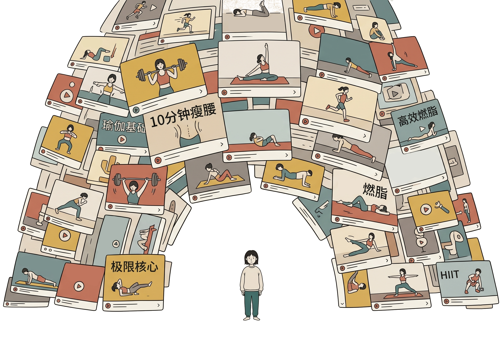
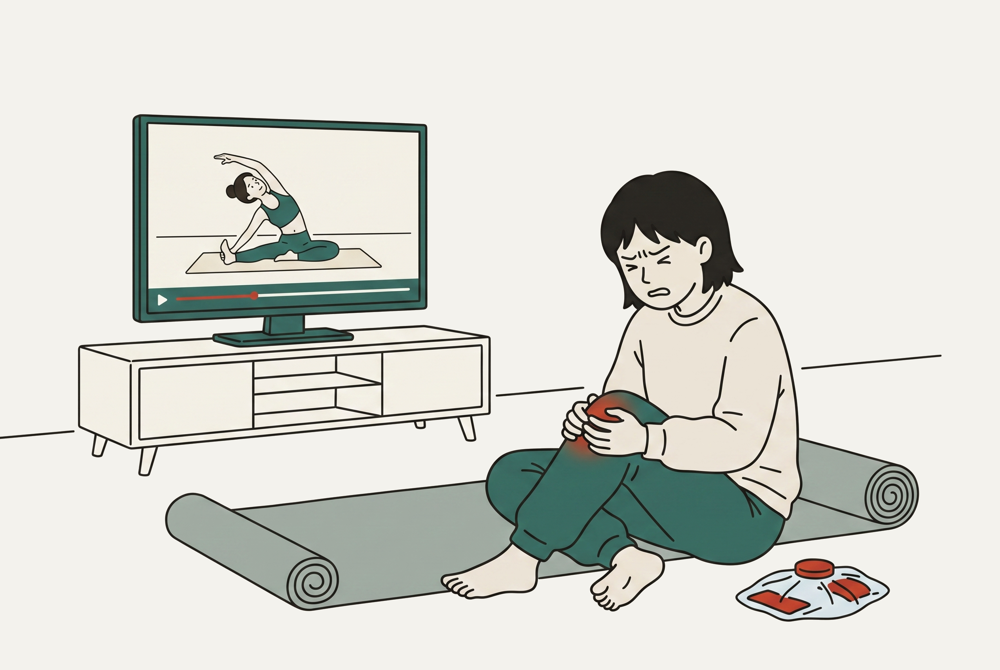
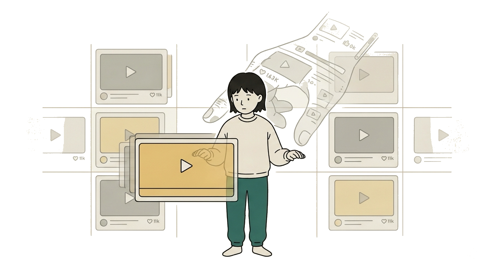
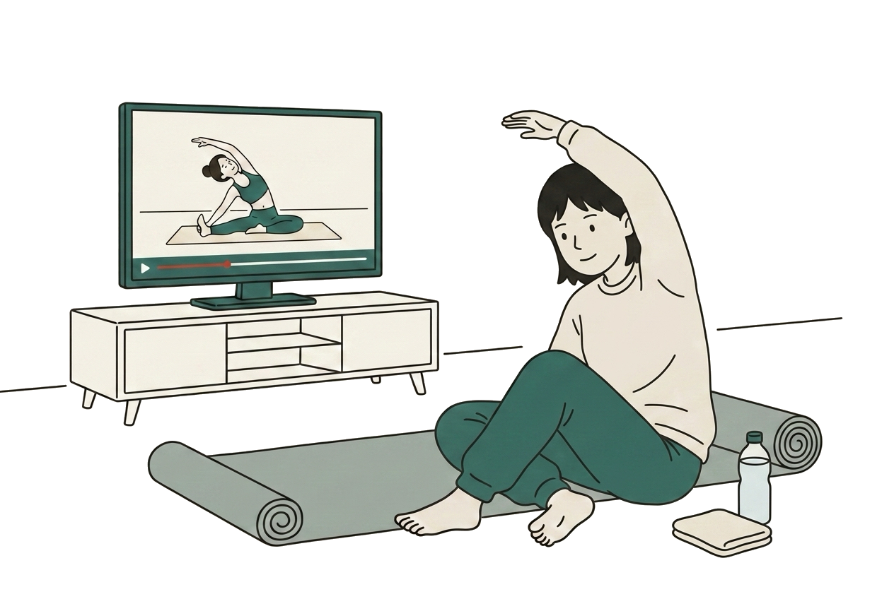

这个判断，
在数据里得到了验证。
我们把收集到的标题分成两类：一类是“强承诺、夸张话术”（如“3 天见效”“暴汗”“躺瘦”），另一类是“普通话术”（如“肩背拉伸”“放松训练”）。结果发现：含承诺话术的视频，中位播放量是普通话术视频的约 3.7 倍。
——解码 1.2 亿人的
「屏幕教练」
先看第一步——被推到最前的，是最会承诺的那一种，而不是最科学的。

小刘并不是一个人。
在全国，经常锻炼的人已经超过5.4 亿，而健身的入口，正悄然从健身房转向手机。越来越多人跟着屏幕里的博主一起深蹲、跳跃、燃脂，希望用更低的成本，换一个更健康的身体。仅在 B 站，每天就有约291 万人跟着视频打卡——相当于每分钟约 2000 人点开一条跟练视频。而近一年，这类跟练内容的数量暴涨了186%。想动的人越来越多，愿意"教"你的视频，也越来越多。
当人们搜索"减肥""燃脂"，最容易被看见的内容，几乎都围绕着同一个逻辑——用最短的时间，改变你的身体。
这些相似的高频词同时也意味着，平台上那些看似丰富多样的健身内容，其实都在共享着同一套流量密码：被反复强调的从来不是训练过程，而是训练结果；承诺的不是身体如何安全地改变，而是多久就能改变。
这个判断，
在数据里得到了验证。
我们把收集到的标题分成两类：一类是“强承诺、夸张话术”（如“3 天见效”“暴汗”“躺瘦”），另一类是“普通话术”（如“肩背拉伸”“放松训练”）。结果发现：含承诺话术的视频，中位播放量是普通话术视频的约 3.7 倍。
于是，当小刘打开一条健身视频，
ta 跟随的，从来不是一本科学训练百科——
而是一个由“效果承诺”主导的流量竞技场。被播放量和点赞推到最前排的，往往并不是拥有最安全训练方案的那一条，而是标题最能制造点击的那一条。
但这样被推到最前的训练，不一定适合所有人，也不一定就是科学的。
跟练的第五天，小刘的腿开始疼了起来。
起初只是酸，后来变成一种尖锐的刺痛。小刘咬着牙忍，以为这只是健身该有的“效果”，直到疼痛让 ta 无法正常走路，才去了医院。
医院给出的诊断是：肌肉拉伤。一次想让身体变得更好的尝试，最后却把 ta 送进了诊室。

高播放，并不等于高质量。我们按运动处方给热门视频逐条打分，再去弹幕里，找那些喊疼的人。
怎样才算一条
“科学”的健身视频？
选择跟练的人，在判断一个视频科不科学时，几乎没有统一的标准。但事实上，早已存在一套全球公认的权威依据——美国运动医学会（ACSM）提出的 FITT-VP 原则，它正是运动科学与临床运动医学通用的核心处方框架。
标准 · FITT-VP 运动处方框架 ACSM
一份科学的训练，至少要回答这六件事
于是，我们依据 FITT-VP 原则，建立了一套包含 10 个维度的科学性评价体系，对 1,477 条热门健身视频逐条编码：从目标人群、风险提示、训练强度，到热身恢复、进阶方案、动作技术……每项按 0—2 分计分，最终换算为百分制。
把热门视频逐条打分后，
中位数只有 15 分。
被删掉的，是训练科学。
被最先删掉的，往往不是口号，而是科学解释。运动前热身、训练强度选择、进阶与退阶方案，本应直接关系到训练安全与效果；但在我们的样本中，89% 的视频没有热身环节，84% 没有给出进阶或退阶方案，81% 没有说明训练强度。
也就是说，许多热门健身视频呈现给用户的，并不是一个完整、科学的训练方案，而只是一个不断重复的动作序列。至于什么时候该停下来、哪些人不适合练、动作做不到该怎么办，往往被省略了。
而这些被省略的内容，并不会因为视频没有讲，就真的不存在。相反，它们会在跟练者的身体感受中显现出来。
被记住的，是身体疼痛。
在收集到的约 57 万条弹幕与评论中，我们将用户提到的"疼痛"按身体部位归类，发现最常出现的部位集中在腰部、膝关节和肩部。这三个区域也正是《中国运动损伤诊疗指南》中提到的运动损伤高发部位。
换句话说，短视频里被跳过的热身、强度和适应性说明，最终可能以疼痛和损伤的形式，被身体重新"补上"。
卷腹、平板、深蹲——那些想练出腹肌和线条的动作，最先伤到的常常不是肚子，而是腰。它是所有部位里被提到最多的。
哪怕视频标着“无跳跃 / 膝友好”，“跟练几天膝盖就疼”依然反复出现。
本想靠跟练放松久坐一天的酸痛，可姿势一旦不对，练完反而更僵、更紧。
如果疼痛如此普遍，
为什么评论区几乎只剩“成功”？
如果小刘在跟练前，先看到那些受伤反馈，或许就不会点开视频。可现实是，评论区最显眼的位置，往往被"瘦了""有效""坚持打卡"占据；而"膝盖疼了""腰酸了""肩颈更僵了"这样的声音，要么数量更少，要么被压在更靠后的位置。
但这并不意味着受伤不存在。很多受伤者，早在留言之前就离开了。一次跟练会经历层层筛选：有人没有开始，有人练几天就放弃，也有人因为疼痛中断。最终还能留在评论区分享体验的，往往是坚持下来、效果较好的人。
↑ 受伤 / 疼痛中断的人，大多在中间这几步就离开了，根本走不到"留言"这一格。
这就是幸存者偏差：我们看见的，只是"留下来的人"说的话。于是后来者点进同一个视频，看到的像是一个由成功案例组成的世界。风险并没有消失，只是被成功叙事盖住了。
在你点击之前，一轮筛选已经发生——决定的不是科学，而是传播。
你以为是自己在挑视频，
其实，挑选早已替你完成。
用户在网络上选择视频的过程，看似是自主选择，但事实上，在小刘点击之前，一轮筛选就已经发生。决定哪些内容被优先看见的，并不是它科不科学，而是它的传播表现。

并不是“科学的，没人爱看”。
有人以为，播放量高的视频一定不科学。但在控制其他变量后我们发现：科学评分与互动率之间，其实存在微弱的正相关。也就是说——科学内容一旦被看见，用户其实是愿意点赞、收藏、互动的。
真正的问题，从来不是“科学内容没人看”。而是这类视频更难获得被看见的机会——它常常被算法埋在搜索结果的更底层，排得更靠后、更难被翻到。
最懂科学训练的人，
反而最不被看见。
我们按资质把头部博主分成五类，把它们的流量与科学分摆在一起，出现了一种耐人寻味的错位：
健身达人型博主，流量碾压全场，科学分却垫底；而那些更懂运动安全的专业运动员、健身教练，科学分最高、约 40 分，播放量却只有几千。最懂得合理、安全健身的人，声音在互联网上被削弱；而那些最会喊口号的人，被推到了每个人面前。
但这并不意味着算法在“主动推荐危险内容”。它揭示的是另一件事：当算法以 “互动最大化” 为唯一指令运转时，就在客观上，为那些更刺激、更具承诺性的视频，打开了一条传播的绿色通道。
风险不是算法的目标，
却是这套逻辑下，难以避免的副产品。
当数亿人把手机当作健身教练，真正在发号施令的，是一套以 点击量 为最高指令的推荐系统。
小刘在深夜努力地挑选着自己觉得靠谱的那条视频，
却没想到，搜索的界面早已被系统筛过一轮——
ta 跟着“精心挑选”的视频练，最终受了伤。
如果风险源于算法，那责任就全在算法吗？答案，或许没那么简单。
如果说风险源于算法，
那么责任，是否也全在算法？
答案或许没有那么简单。在整个健身短视频的生态里，平台、创作者和用户，其实都参与了这套传播逻辑的形成——只是各自的需求不同。
三方需求各不相同，却在同一个方向上彼此叠加——这正是风险扩散的合力来源。
从这个意义上说，风险并不是某一个环节的错误，而是整个传播链条共同作用的结果。
算法只是把这股合力，
放大成了你滑动时
看到的样子。
但改变并非一夕之间：算法的迭代需要时间，创作者的内容转型需要激励，而用户对“速成”的渴望，也不会在一夜之间消失。
在外界环境改变之前，或许我们可以先从自身做起——让每一个普通人，在点下“开始跟练”之前，多一次保护自己的机会，让像小刘一样因健身而受伤的人，越来越少。
开练前，
先问这条视频五个问题。
基于这次研究的发现，我们把最常被省略的科学要素，整理成一份开练前自查。如果你常跟的那条视频大多答不上来，它也许只是“最会承诺”，而未必“最适合你”。

小刘以为，是自己选择了那条视频。
但其实，是那套以点击量为指令的系统，
替 ta 按下了选择。
而把选择权拿回来的第一步，
是在开始之前，多问自己一句：
这一次，我跟练的，是科学，还是流量？